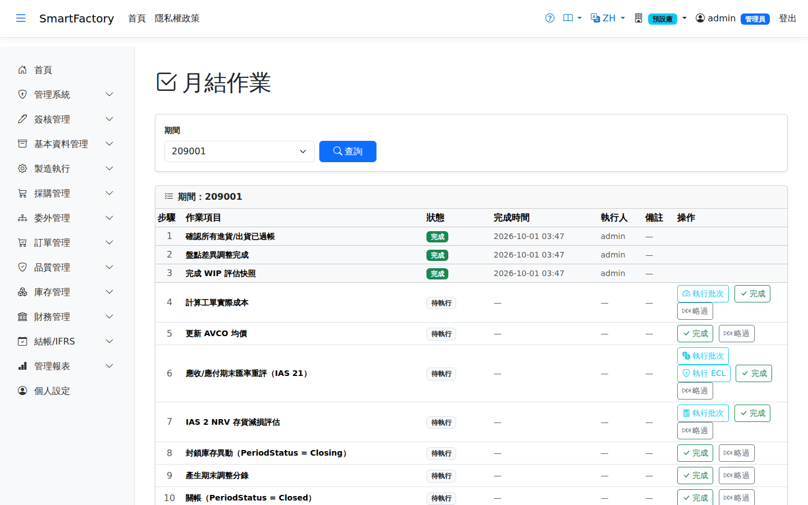
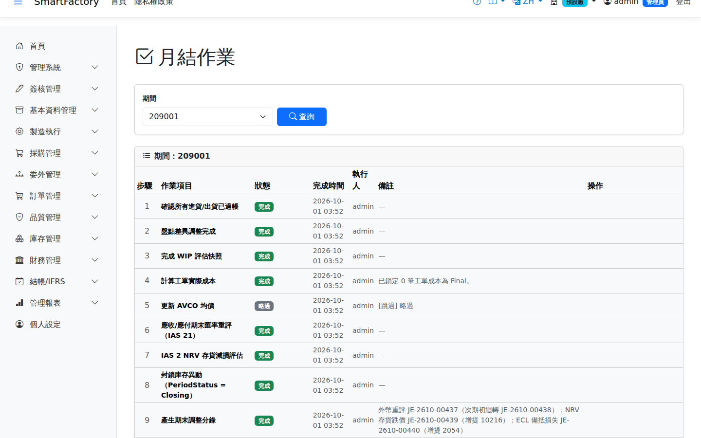

月結作業Month-end close
路由：/MonthEnd | 月結檢查清單工作流Route: /MonthEnd | The month-end checklist workflow
以檢查清單引導月結：各模組未結單據檢核、成本重估、評估入帳到期間關帳，逐項打勾留跡，確保關帳前置完整。Guides the month-end close with a checklist: unposted documents in each module, cost re-estimation, booking the assessments and finally closing the period — each item ticked off and recorded, so that nothing is missed before closing.

月結作業畫面截圖（示意，實際欄位/資料依權限與查詢條件而異）Month-end close screenshot (illustrative; actual fields and data vary by permission and query criteria)
查詢Search
1
查詢列輸入條件後點「查詢」；欄位標題可點擊排序，清單下方有分頁導航。Enter your criteria on the query bar and click "Search"; column headers can be clicked to sort, and the paging controls sit below the list.
作業流程Process
執行月結Run the month-end close
1
輸入期間按「查詢」；第一次請按「初始化清單」建立 10 個步驟。Enter the period and click "Search"; the first time, click "Initialize Checklist" to create the 10 steps.
2
依序處理每一步：有「執行批次」的步驟先執行再按「完成」；不適用的步驟按「略過」。前面的步驟沒完成（或略過），後面的按不下去。Work through the steps in order: for a step with "Run Batch", run it first and then click "Complete"; click "Skip" for a step that does not apply. A later step cannot be completed until every earlier one is completed or skipped.
3
步驟 4「執行批次」會帶出部門實際費用已存的本期資料（每行「工作中心:實際人工:實際製費」），確認後以實際費率重估工單成本並產生調整分錄。本期有報工或換線工時、卻沒有輸入部門費用的工作中心會被擋下並列出——確實沒有費用請輸入 0。Step 4 "Run Batch" pre-fills this period's figures already saved in Department Actual Cost (one line per work center: "work center:actual labour:actual overhead"); confirming re-costs work orders at the actual rates and posts the adjusting entry. A work center that has labour or setup hours this period but no department cost is rejected and listed — enter 0 if it genuinely had no cost.
4
步驟 6「執行批次」輸入期末匯率（每行「幣別:匯率」）做外幣重評；同一步的「執行 ECL」計算預期信用損失（基準日＝期末）。步驟 7「執行批次」做 NRV 評估。這幾步只算出評估結果，還不入帳。Step 6 "Run Batch" takes the period-end rates (one line per currency: "currency:rate") and revalues foreign currency balances; "Run ECL" on the same step calculates expected credit losses as at the period end. Step 7 "Run Batch" runs the NRV assessment. These steps only calculate results; nothing is posted yet.
5
步驟 8 完成後期間進入月結中（只接受調整分錄）；關帳前若要退回修資料，按步驟 8 的「取消月結」。Once step 8 is completed the period is in closing and accepts only adjusting entries; to go back and fix data before closing, click "Cancel Closing" on step 8.
6
步驟 9 按「完成」時，系統把外幣重評、NRV、ECL 的結果入總帳（見下方〈期末調整分錄〉），結果寫在該步驟的備註。步驟 10 按「完成」即關帳。Clicking "Complete" on step 9 posts the foreign currency revaluation, NRV and ECL results to the ledger (see "Period-end adjusting entries" below), and the outcome is written to that step's notes. Clicking "Complete" on step 10 closes the period.

步驟 9 完成後，備註列出開出的分錄單號或略過原因After step 9 is completed, its notes list the journal numbers posted or why an item was skipped
期末調整分錄（步驟 9）Period-end adjusting entries (step 9)
| 項目Item | 分錄Entry | 說明Guide |
|---|---|---|
| 外幣重評Foreign currency revaluation | 利益：借 1170 應收／2100 應付，貸 4190 匯兌利益 損失：借 5199 匯兌損失，貸 1170／2100Gain: Dr 1170 AR / 2100 AP, Cr 4190 FX gain Loss: Dr 5199 FX loss, Cr 1170 / 2100 | 每張發票一行。期末次日自動開一張反向分錄沖回——收付款時的匯兌損益是以發票入帳匯率計算，不沖回會重複認列One line per invoice. A reversing entry dated the day after the period end is posted automatically — exchange differences on receipts and payments are measured from the invoice's booking rate, so without the reversal they would be recognised twice |
| NRV 存貨跌價NRV inventory write-down | 借 5240 存貨跌價損失，貸 1419 備抵存貨跌價損失Dr 5240 Inventory write-down loss, Cr 1419 Allowance for inventory valuation loss | 把備抵調整到等於本期評估額；評估變小時反向沖回差額Adjusts the allowance to equal this period's assessment; if the assessment falls, the difference is reversed |
| ECL 備抵ECL allowance | 借 6250 預期信用減損損失，貸 1179 備抵損失-應收帳款Dr 6250 Expected credit impairment loss, Cr 1179 Loss allowance – AR | 同 NRV：備抵調整到等於本期評估額As for NRV: the allowance is adjusted to equal this period's assessment |
可以重做，只會補差額，不會重複入帳。本期沒有執行的評估會略過（不當成 0，否則會把前期提列的備抵整筆沖掉）。步驟 9 完成之後若又在 NRV／ECL 畫面重算，步驟 10 關帳前會自動再補一次差額；步驟 9 選「略過」則完全不入帳。外幣重評與 ECL 一律以期末當時評估：只算期末日（含）以前開立的發票，期末之後才確認的收付款與折讓會加回未結——所以反關帳後重做上一期月結，下一期的交易不會影響上一期的評估。It can be run again and only posts the difference, never a duplicate. An assessment that was not run this period is skipped (it is not treated as zero, which would reverse the whole allowance provided in earlier periods). If NRV or ECL is recalculated on its own screen after step 9, step 10 posts the difference once more before closing; if step 9 was skipped, nothing is posted. Foreign currency revaluation and ECL are always assessed as at the period end: only invoices dated on or before the end date count, and payments, receipts and notes confirmed after the end date are added back to the open balance — so when a closed period is reopened and its month-end redone, transactions from the following period do not affect it.
欄位說明Field reference
查詢條件Query criteria
| 條件Condition | 說明Guide |
|---|---|
| 期間Period | 要執行月結的會計期間（YYYYMM）；未建立檢查清單時會自動初始化 10 個步驟The accounting period (YYYYMM) to close; where no checklist exists yet, the 10 steps are created automatically |
檢查清單欄位Checklist fields
| 欄位Field | 說明Guide |
|---|---|
| 步驟Step | 固定 1–10 的執行順序，不可跳號A fixed order from 1 to 10; no step can be skipped |
| 作業項目Step Description | 該步驟的月結工作內容（見下表）What the step involves at month end (see the table below) |
| 狀態Status | 未完成 / 已完成；部分步驟由系統作業自動回寫Not done / done; some steps are ticked automatically by the system |
| 完成時間Completed At | 該步驟標記完成的時間戳Timestamp when the step was marked done |
| 執行人Completed By | 標記完成的使用者The user who marked it done |
| 備註Notes | 該步驟的補充說明或例外情形Notes or exceptions for the step |
月結十步驟The ten month-end steps
| 步驟Step | 說明Guide |
|---|---|
| 1 確認所有進貨/出貨已過帳1 Confirm all receipts and shipments are posted | 避免有單據停在未過帳狀態導致成本不完整so that no document is left unposted and the cost stays complete |
| 2 盤點差異調整完成2 Count variance adjustments completed | 盤點單差異需先轉為庫存調整並過帳Count sheet differences have to be turned into stock adjustments and posted first |
| 3 完成 WIP 評估快照3 Take the WIP valuation snapshot | 凍結在製品金額，供期末評價與比較Freezes the WIP value for period-end valuation and comparison |
| 4 計算工單實際成本4 Calculate work order actual cost | 「執行批次」以部門實際費用重估工單人工／製費並開調整分錄；「完成」把工單成本鎖定為 Final"Run Batch" re-costs work order labour and overhead from department actual costs and posts the adjusting entry; "Complete" locks the work order costs as Final |
| 5 更新 AVCO 均價5 Update the AVCO average cost | 重算移動加權平均成本Recalculate the moving average cost |
| 6 應收/應付期末匯率重評（IAS 21）6 Period-end revaluation of AR and AP (IAS 21) | 外幣債權債務以期末匯率重評，算出匯兌損益（扣除折讓；收付清後才折讓的多收付也會重評）；同一步可執行 ECL。結果於步驟 9 入帳Foreign currency receivables and payables are revalued at the period-end rate to work out the exchange gain or loss (net of credit notes; overpayments created by a credit note after settlement are revalued too); ECL can also be run on this step. The results are posted at step 9 |
| 7 IAS 2 NRV 存貨減損評估7 IAS 2 NRV inventory impairment assessment | 比較帳面成本與淨變現價值算出減損（見 NRV 評估畫面）；結果於步驟 9 入帳Compare book cost with net realisable value to work out the impairment (see the NRV assessment screen); the result is posted at step 9 |
| 8 封鎖庫存異動8 Freeze stock movements (period status = Closing) | 期間狀態切為 Closing，之後僅允許調整分錄The period is switched to Closing, after which only adjusting entries are allowed |
| 9 產生期末調整分錄9 Create the period-end adjusting entries | 按「完成」時把外幣重評、NRV、ECL 的結果入總帳（見期末調整分錄）Clicking "Complete" posts the foreign currency revaluation, NRV and ECL results to the ledger (see period-end adjusting entries) |
| 10 關帳10 Close the period (period status = Closed) | 先跑關帳前稽核，通過後期間狀態切為 Closed，該期不再接受任何入帳；步驟 9 已完成時會先補入評估差額Runs the pre-closing audit first; once it passes the period is switched to Closed and accepts no further postings. If step 9 was completed, any assessment difference is posted first |
相關畫面Related screens
會計期間Accounting period、在製品報表WIP Report、部門實際費用Department Actual Cost、NRV 評估NRV Assessment、預期信用損失Expected Credit Loss、日記帳Journal Entry